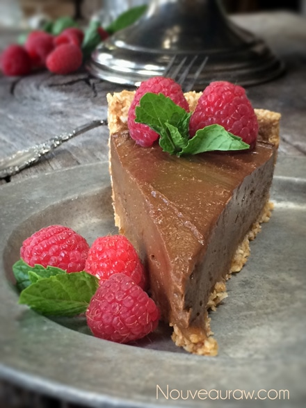

~ raw, vegan, gluten-free, nut-free ~
The key word in describing this pie is silk because that is just what it feels like in your mouth and on your tongue. The texture is amazingly light, soft and creamy.
There are three layers to this pie. You have the chewy, flaky crust, then nestled on that is the “caramel” layer that is made up of blended dates… topped with the airy yumminess of the chocolate mousse, which is hidden by being the same color as the caramel. :)
The base of this nut-free pie is avocados, which are sneakily (my new word for the day) disguised with the help of the cacao and dates. When creating raw recipes, you can make the same recipe 10x over, and each one may taste somewhat different. That is the challenge, err, I mean the beauty of using fresh ingredients.
That is why it is always important to use the best quality of ingredients, making sure that they are ripe and full of flavor. If you use unripe avocados in this recipe, it won’t be pleasing to the palate. Not only are they hard, but they can also taste bitter, and talk about a recipe spoiler.
The type of dates you choose to use will also affect the overall flavor. I use Medjool dates which have a wonderful caramel-like taste. They are moist, big, and plump… just the way I like my dates. (lol, well that doesn’t sound right, just don’t forget that we are talking about food here)
This will be a pie that requires refrigeration right up until serving, definitely not a pie to take to an outdoor potluck where it would sit on a picnic table for 4 hours in the hot sun. If that is what you are seeking… move along… this isn’t the pie you’re looking for.
You can dress it up with any fresh fruit of the season, drizzle with a chocolate sauce, or perhaps shaved chocolate pieces. Enjoy!
Ingredients:
12 slices (8″ Springform pan)
Crust:
- 2 cups coconut flakes, unsweetened
- 1/2 cup date paste
- 1/4 cup lucuma powder
- 1/8 tsp Himalayan pink salt
- 1 tsp vanilla extract
Caramel layer
Mousse:
- 4 1/2 cups mashed avocado
- 1/2 cup date paste
- 6 Tbsp maple syrup
- 1/4 cup raw cacao powder
- 1/4 tsp Himalayan pink salt
Preparation:
Crust:
- Place the coconut flakes, lucuma, and salt in the food processor, fitted with the “S” blade. Pulse together.
- Add the date paste and vanilla and process until the batter sticks together when pinched.
- Pat the crust dough into the pan and up along the edges. Set aside.
Caramel layer:
- With an offset spatula, spread the date paste evenly over the bottom of the crust.
Mousse:
- In the blender combine the avocado, date paste, maple syrup, cacao, and salt. Blend until totally smooth.
- I found that the food processor didn’t get it smooth enough.
- You can use maple syrup, coconut nectar what whatever liquid sweetener of choice.
- Pour the chocolate mousse into the pie dish and smooth the top with an off-set spatula. Place in the fridge to chill for several hours. I let mine sit in the fridge overnight.
- Decorate prior to serving if using fresh fruit and mint. Mint leaves tend to wilt after a day.
- The pie should keep in the fridge for 2-3 days.